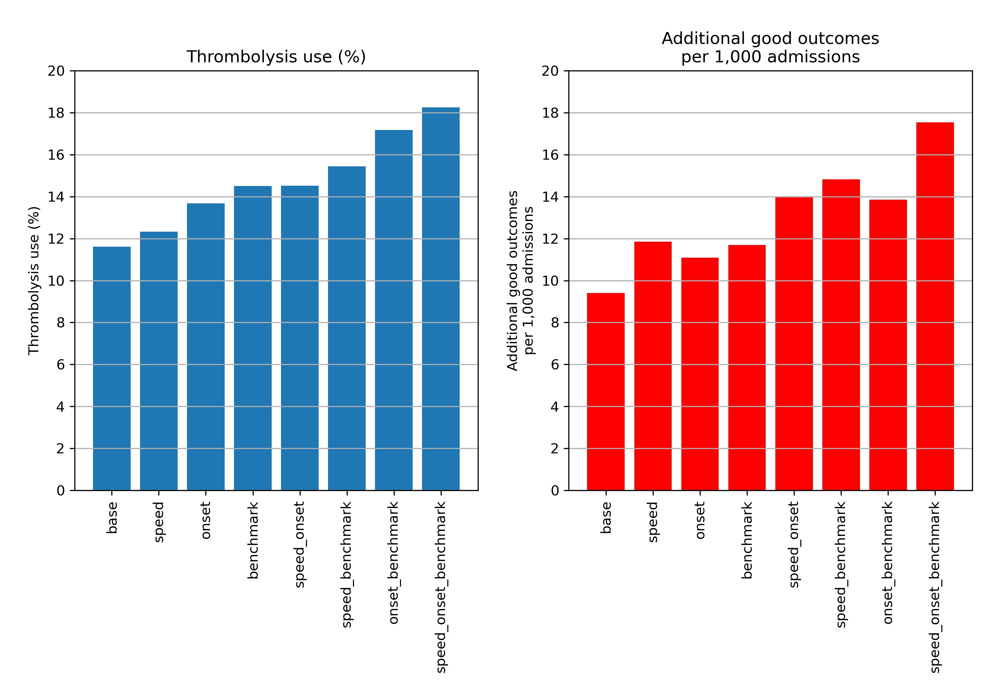
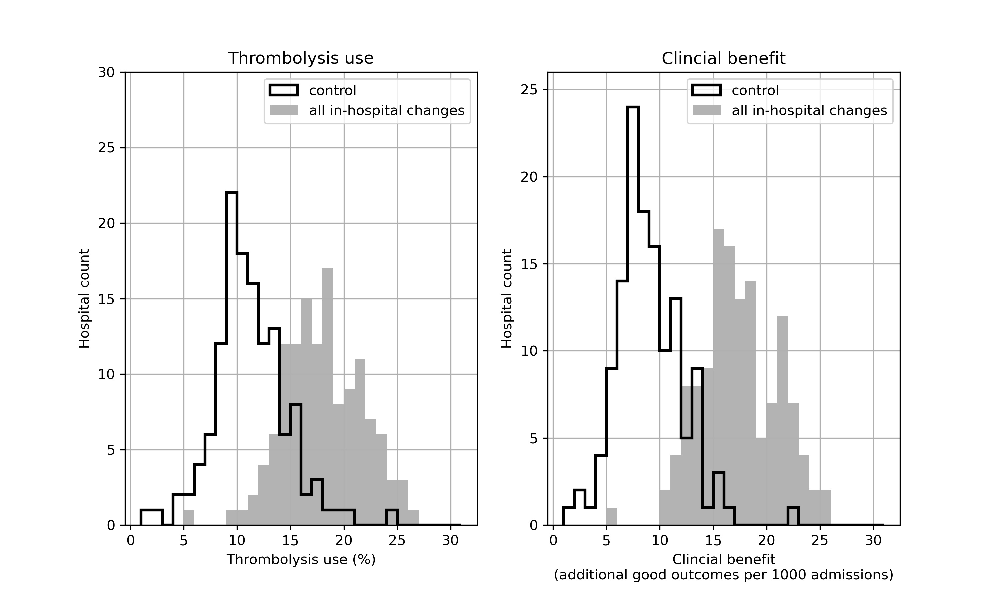

SAMueL - Summary of Findings¶
“Your decision to treat or not treat… That’s the difficult part. That’s the grey area where everyone does a different thing.”
—Stroke Consultant during interviews for SAMueL
Overall aims¶
The overall aims of the project are:
Model thrombolysis decision-making using machine learning, so that we may ask the question ‘what treatment would my patient receive at other hospitals?’
Model the stroke pathway, using clinical pathway simulation, so that we may ask the question ‘what would happen to a hospital’s thrombolysis use of, and benefit from, thrombolysis by changing key aspects of the pathway?’. The key changes investigated are:
Pathway speed
Determining stroke onset times
Making decisions according to the majority vote of decisions that would be expected at a benchmark set of hospitals
We base our modelling on a simplified view of the stroke pathway:

Data¶
Data was retrieved for 246,676 emergency stroke admissions to acute stroke teams in England and Wales between 2016 and 2018 (three full years). Data used is for units which have at least 300 emergency stroke admissions with at least 10 patients receiving thrombolysis in the three years.
General statistics¶
94.7% of patients have an out-of-hospital stroke onset.
11.8% of all out-of-hospital stroke onset arrivals receive thrombolysis.
67% of all patients have a determined stroke time of onset, 60% of whom arrive within 4 hours of known stroke onset. 40% of all arrivals arrive within 4 hours of known stroke onset.
Of those out-of-hospital onset patients arriving within 4 hours of known stroke onset:
The average onset-to-arrival time is 111 minutes
95% receive a scan within 4 hours of arrival, with an average arrival-to-scan time of 43 minutes.
30% of those who receive a scan within 4 hours of known stroke onset receive thrombolysis.
11.8% of all arrivals receive thrombolysis.
The average scan-to-needle time is 40 minutes, the average arrival-to-needle time is 63 minutes, and the average onset-to-needle time is 158 minutes.
Inter-hospital variation¶
Thrombolysis use varies from 1.5% to 24.3% of all patients, and 7.3% to 49.7% of patients arriving within 4 hours of known stroke onset.
The proportion of determined stroke onsets ranges from 34% to 99%.
The proportion of patients arriving within 4 hours of known stroke onset ranges from 22% to 56%.
The proportion of patients scanned within 4 hours of arrival ranges from 85% to 100%.
Average arrival-to-scan time (for those arriving within 4 hours of known stroke onset and scanned within 4 hours of arrival) ranges from 19 to 93 minutes.
Average arrival-to-needle time varies from 26 to 111 minutes.
The proportion of patients aged 80+ varies from 29% to 58%.
The average NIHSS (stroke severity) ranges from 6.1 to 11.7.
Differences by age group (under age 80 vs. aged 80+ years) and gender:¶
43% of arrivals are aged 80 or more.
10.1% of arrivals aged 80+ receive thrombolysis, c.f. 13.0% of those under age 80. There is a steady decline in use of thrombolysis over the age of 55.
39% of arrivals aged 80+ arrive within 4 hours of known stroke onset, c.f. 40% of those under age 80.
The average disability (modified Rankin Scale, mRS) before stroke is 1.7 for those aged 80+, c.f. 0.6 for those under age 80.
The average stroke severity (NIHSS) on arrival is 10.7 for those aged 80+, c.f. 8.2 for those under age 80.
Of those scanned within 4 hours, 26.3% of those aged 80+ receive thrombolysis, c.f. 34.7% of those under age 80.
51.4% of all arrivals are male.
Of those arriving within 4 hours of known stroke onset 30.8% of all male arrivals receive thrombolysis, compared with 28.2% for females.
Effect of ethnicity¶
There is a small effect of ethnicity: 10.2% of black people receive thrombolysis, compared with 11.7% of white people. This difference is mostly explained by a lower proportion of black people arriving within 4 hours of known stroke onset.
Effect of clinical features¶
Use of thrombolysis falls as disability (mRS) before stroke increases.
Use of thrombolysis is low at low stroke severity on arrival, increases and reaches a plateau (NIHSS 6-25) and falls again at higher stroke severity on arrival.
The presence or absence of comorbidities can be a strong indicator of the use of thrombolysis. For example those on anticoagulant therapies receive thrombolysis less than those who do not, but those on anti-platelet therapies receive it more.
Stated reasons for not giving thrombolysis¶
The three most common reasons stated for not giving thrombolysis are stroke too mild/severe, haemorrhagic stroke, and patient improving.
Effect of time and day and day of week on use of thrombolysis¶
Nationally, there is a significant fall in use of thrombolysis for arrivals between 3am and 6am (with about 6% receiving thrombolysis, compared with 11% to 13% in other periods during the day), but the number of arrivals in this period is only about 3% of all arrivals.
Nationally there is a small effect of day of week, with thrombolysis use ranging from 11.2 to 12.6% by day of week (increasing Monday through to Sunday).
Machine Learning¶
We built a variety of model types:
Logistic regression: We used either a single model with one-hot encoding of hospitals*, or fitted models to each hospital independently.
Random forests: We used either a single model with one-hot encoding of hospitals*, or fitted models to each hospital independently.
Neural networks: We used either a fully-connected network (where all features are treated as a single set), or a modular embedding network, where features are split into three groups: hospital ID, clinical features, pathway timings. Each group is handled by a sub-network which outputs an ‘embedding vector’, reducing the inputs down to either one or two values which are then combined together before final output.
*One-hot encoding converts a hospital ID to a vector that is all zeros apart from the index of the hospital ID which is set to one. So hospital 2 out of a total of five hospitals would have one-hot encoding of [0, 1, 0, 0, 0].
Accuracy of models¶
Model* |
Accuracy (%) |
ROC-AUC |
Max Sens=Spec (%) [1] |
|---|---|---|---|
Logistic regression single model |
83.2 |
0.904 |
82.0 |
Logistic regression hospital-level models |
77.5 |
0.815 |
74.0 |
Random forest single model |
84.6 |
0.914 |
83.7 |
Random forest hospital-level models |
81.4 |
0.854 |
78.1 |
Fully-connected neural net single model |
84.4 |
0.913 |
83.3 |
1D Embedding neural net single model |
85.5 |
0.921 |
84.5 |
* Single model fits use one-hot encoding for hospitals. Hospital-level models fit a model to each hospital independently. Embedding neural nets encode hospital id, pathway data, and clinical data into a single value vector each.
[1] The maximum value where sensitivity matches specificity.
There is high agreement between model types. Logistic regression (single fit), random forests (single fit), and neural networks (single fit, 1D embedding) agree classification on 87% of patients. Neural networks and random forests agree on 93% of patients.
There is generally higher agreement between model types (87% to 93% for any pairwise comparison), than between models and reality (83% to 86% accuracy for the same model types).
Combining outputs of the three model types into one combined model (an ensemble model) did not improve accuracy.
Accuracy of models increased with training set size up to about 30k training et examples.
All random forest and neural network models were well calibrated, meaning that 9 out of 10 people with a predicted 90% probability of receiving thrombolysis would receive thrombolysis. The single fit logistic regression model, but not the individual hospital fit model was well calibrated.
Random forests - what treatment would my patient receive elsewhere?¶
For most modelling (e.g. inclusion in stroke pathway model) we have chosen to use hospital-level random forests models. Though accuracy is a little lower than the best models, these models are easier for people to understand and have strong hospital independence.
When comparing predicted decisions between hospitals:
It is easier to find majority agreement on who not to thrombolyse than who to thrombolyse. 77.5% of all patients have a treatment decision that is agreed by 80% hospitals. Of those who were not given thrombolysis, 84.6% had agreement by 80% hospitals. Of those who were given thrombolysis, 60.4% had agreement by 80% hospitals
A benchmark set of hospitals was created by passing the same 10k patient cohort set through all hospitals, and selecting the 30 hospitals with the highest thrombolysis use. If all thrombolysis decisions were made by a majority vote of these hospitals then thrombolysis use (in those arriving within 4 hours of known stroke onset) would be expected to increase from 29.5% to 36.9%.
Decisions at each hospital may be compared with the benchmark majority vote decision.
These models may be used to identify two types of patients:
Patients where the model has high confidence in prediction, but were not treated as expected (e.g. a patient who appears to have high suitability for thrombolysis, but did not receive it).
Patients which were treated according to the prediction of the hospital model, but where the majority of the benchmark hospitals would have treated that patient differently.
Patient vignettes may be constructed to illustrate particular types of patients, for example a patient in a hospital that has low treatment rates of patients with previous disability. These vignettes are potentially useful for clinical discussions.
Hospitals may be grouped by comparison of what proportion of patients would be expected to have the same thrombolysis decision. This grouping is made clearer by using a subset of patients with higher divergence of decisions (those patients that 30-70% of hospitals would thrombolyse).
For patients not treated as expected we can use the structure of the random forests model to find similar patients that were treated differently.

Neural networks¶
Neural networks offer the greatest accuracy (though not by a large amount), but are more ‘black box’ than other model types so are not currently our preferred machine learning model. However, as well as high accuracy, modular embedding networks offer the advantage of being able to separate out hospital, clinical, and pathway features.
A 1D embedding network encodes hospitals, patients, and pathway information as a single value for each.
Each hospital always has the same hospital embedding value. This value correlates very highly with the predicted thrombolysis use on a standard test set of patients. The network therefore appears to be encoding a hospital’s ‘willingness/enthusiasm to use thrombolysis’.
Each patient has a separate clinical embedding value, based just on their clinical features. This correlates closely with the probability of receiving thrombolysis. The network therefore appears to be encoding a patient’s ‘clinical suitability for thrombolysis’. Clinical embedding mimics patterns seen in thrombolysis use such as low perceived suitability for thrombolysis at very low or high stroke severity scores, and declining perceived suitability for thrombolysis with level of disability before stroke.
A 2D embedding network encodes hospitals, patients, and pathway information as a pair of values for each allowing, for example, plotting on 2D chart where similar hospitals/patients should cluster together.
2D hospital embedding does not appear to show any more detail than 1D embedding.
2D patient embedding clusters patients by clear groups - for example four groups (located at each corner of a chart when plotting the patient embeddings 2D vector) are: 1) patients with high clinical suitability for thrombolysis, 2) non-thrombolysed haemorrhagic stroke patients, 3) non-thrombolysed severe stroke, 4) non-thrombolysed mild stroke.
Pathway simulation¶
The model is used to examine the effect, at each hospital and nationally, of making three key changes (alone or in combination) to the stroke pathway:
Speed: Sets 95% of patients having a scan within 4 hours of arrival, and all patients have 15 minutes arrival to scan and 15 minutes scan to needle.
Onset-known: Sets the proportion of patients with a known onset time of stroke to the national upper quartile if currently less than the national upper quartile (leave any greater than the upper national quartile at their current level).
Benchmark: The benchmark thrombolysis rate takes the likelihood to give thrombolysis for patients scanned within 4 hours of onset from the majority vote of the 30 hospitals with the highest predicted thrombolysis use in a standard 10k cohort set of patients. These are from Random Forests models.
Results:
The model predicts current thrombolysis use with high accuracy (R-squared of 0.980, mean absolute difference in thrombolysis use of 0.5 percentage points).
Combining the three changes suggests that thrombolysis use could potentially be increased from 11.6% to 18.3% of all emergency admissions, and the clinical benefit increased from 9.4 to 17.6 additional good outcomes per 1,000 admissions. The average drivers in improvement in thrombolysis use are benchmark decisions > determining stroke onset > speed, while the average drivers in improvement in outcomes are speed > benchmark decisions > determining stroke onset.
The model identifies the changes that make most difference at each hospital. For improvement in thrombolysis use the changes that make the greatest single difference are benchmark decisions (at 41 hospitals), determining stroke onset time (at 40 hospitals), and speed (at 10 hospitals). One hospital did not have improvement from any change in the model. For improvement in predicted clinical benefit the changes that make the greatest single difference are benchmark decisions (at 55 hospitals), speed (at 51 hospitals) and determining stroke onset time (at 26 hospitals).
If all changes were made at all hospitals there would still be significant variation in use of, and benefit from, thrombolysis. This is due to differences in local patient populations (both in terms of differing clinical presentations, and differences in time from onset to arrival), but the total national benefit will be significantly improved.
The model may be used to provide a target use of thrombolysis that is tailored to each hospital.
Net effect of changes at all hospitals:

Distributional shift in thrombolysis use and expected benefit:
